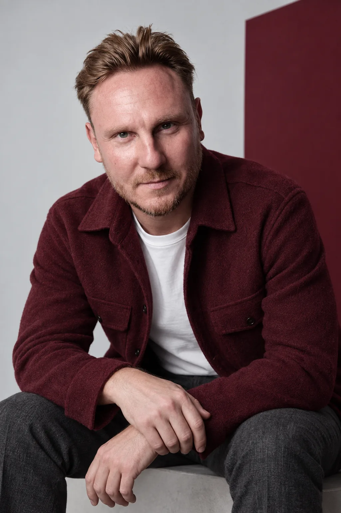

Когда партнёры зашли в тупик. Решение конфликтов без судов и потери бизнеса.
Независимый медиатор для совладельцев, акционеров и первых лиц бизнеса. Помогаю выйти из управленческого тупика, цивилизованно разделить доли и сохранить капитал компании, когда прямые переговоры уже невозможны.
100% конфиденциальность (ст. 5 ФЗ № 193)
Сохранение стоимости активов и непрерывности бизнеса
2–4 недели вместо годов разрушительных судебных тяжб
Медиация — это закрытая процедура переговоров с нейтральным посредником, где стороны не доверяют друг другу, но хотят защитить свой бизнес, деньги и деловую репутацию от разрушения.
Суть
Нейтральный профессиональный переговорщик переводит взаимные претензии и обиды на язык цифр, рисков и юридически твёрдых решений.
Для кого
Совладельцы компаний, партнёры 50/50, инвесторы и основатели, ключевые акционеры и преемники семейных предприятий.
Задача
Остановить корпоративную войну, исключить уголовные риски и рейдерские сценарии, сохранить стоимость бизнеса и управляемость.
Результат
Нотариально удостоверенное медиативное соглашение: раздел долей, выкуп, график выплат и гарантии без огласки в картотеке арбитража.
Формат
Индивидуальные закрытые кокусы (1-on-1 с каждым), совместные раунды на нейтральной территории, работа с юристами сторон.
Ситуации, где цена ошибки — потеря всего бизнеса
Когда в партнёрстве нарастает кризис, промедление ведёт к параличу счетов, уголовным рискам и банкротству компании.
01 / УПРАВЛЕНЧЕСКИЙ ДЕДЛОК 50/50
Тупик в принятии решений
Партнёры разошлись во взглядах на стратегию, инвестиции или операционный контроль. Ни одно ключевое решение не принимается, бизнес парализован.
Снятие блокировки операционной деятельности
Разделение сфер ответственности и права вето
Механизмы Shoot-out, «русская рулетка» или выкуп
02 / ЦИВИЛИЗОВАННЫЙ ВЫХОД И РАЗВОД
Раздел долей и активов
Один партнёр хочет расти дальше, второй — выйти и монетизировать долю. Оценка бизнеса расходится в разы, нарастают взаимные упрёки и угрозы.
Согласование объективной формулы оценки компании
График выплат долей без кассового разрыва бизнеса
Залоговые инструменты и полный отказ от претензий
03 / НАРУШЕНИЕ ДОГОВОРЁННОСТЕЙ
Кризис доверия и подозрения
Подозрения в выводе прибыли, создании параллельных структур, переманивании клиентов или нарушении негласных договоренностей.
Фиксация статуса-кво и остановка скрытых действий
Возврат спорных активов в контур или взаимозачёт
Обновление корпоративного договора с жестким штрафом
Интерфейс переговоров
Как строится процесс: безопасно и конфиденциально
Вам не нужно звонить оппоненту и терпеть оскорбления. Медиатор сам организует первый контакт, снимает эмоциональный накал и ведёт переговоры в структурированном русле.
Нейтральный контакт
Медиатор лично выходит на вторую сторону без ультиматумов, предлагая аудит взаимных рисков.
Закрытые кокусы
Личные 1-on-1 встречи. Ни одно слово не передаётся оппоненту без вашего прямого разрешения.
Статус-кво
Остановка корпоративных атак, арестов счетов и информационных вбросов на время работы.
Сила решения суда
Нотариальное медиативное соглашение имеет силу исполнительного листа по закону № 193-ФЗ.
ПЕРЕГОВОРНЫЙ КЕЙС · ПАВЕЛ РАСПУТИН
Мы с партнёром заблокировали друг другу доступ к счетам. Он требует свернуть филиал в Дубае, я категорически против. На связь не выходит, юристы готовят иски.
Диагностика тупика
Подали иск — заморозите счета компании на 1,5 года. Первый шаг: вводим мораторий на любые юридические действия на 14 дней.
План кокусов
Провожу индивидуальную сессию с каждым. Выявляем базовый интерес: партнёру важна гарантированная ликвидность, вам — международная экспансия.
Партнёр согласен встретиться на нейтральной территории при вашем участии.
Решение за 3 сессии
Готовим разделение: вы получаете международное направление с опционом, партнёр — операционный бизнес в РФ с зафиксированным траншем.
Партнёр хочет выйти из бизнеса и требует 180 млн рублей разом. Реальная оценка — от силы 90 млн. Грозит инициировать налоговую проверку.
Снятие шантажа
Налоговая проверка уничтожит бизнес обоих. Выходим на партнёра с нейтральной позицией: фиксируем аудит по согласованной методике Big 4.
Структурирование сделки
Предлагаем компромиссную оценку 125 млн с рассрочкой на 24 месяца под залог 20% доли и банковскую гарантию.
Он согласился на формулу с рассрочкой, если первый транш составит 40 млн.
Фиксация
Оформляем нотариальное медиативное соглашение. При нарушении графика он вступает в права залога без суда. Бизнес сохранён.
Узнал, что управляющий партнёр перевёл ключевых поставщиков на фирму своей супруги. Подавать заявление в полицию по 159-й статье?
Оценка последствий
Уголовное дело — это обыски, изъятие серверов и мгновенный отзыв банковских кредитов. Вы потеряете 80% стоимости бизнеса за полгода.
Закрытый аудит
На закрытой сессии предъявляем доказательства в формате «риск-аудита» без агрессии, давая партнёру коридор для сохранения лица.
Партнёр признал ситуацию и готов вернуть контракты, если не будет публичного скандала.
Итог
Контракты возвращены, доли перераспределены 70/30 в вашу пользу, подписан жесткий опцион на случай повторения. Никакой огласки.
Реальные кейсы практики. Все имена и идентификаторы изменены по условиям конфиденциальности.
Масштаб практики
Два формата защиты интересов бизнеса
Медиация работает как скорая помощь в остром корпоративном конфликте и как превентивная защита капитала до его начала.
01 / КРИЗИСНОЕ УРЕГУЛИРОВАНИЕ
Остановка корпоративной войны и выход из тупика
Экстренное вмешательство, когда стороны находятся в активной фазе конфликта: наняты адвокаты, заблокированы решения, звучат угрозы или начаты судебные процессы.
Введение немедленного моратория на судебные и силовые атаки
Снятие психологического барьера и восстановление диалога
Разработка нестандартных коммерческих сценариев раздела или выкупа
Нотариальное медиативное соглашение со статусом исполнительного листа
02 / ПРЕВЕНТИВНАЯ АРХИТЕКТУРА
Партнёрские соглашения и правила «на берегу»
Проектирование устойчивой архитектуры владения до возникновения разногласий. Помогает партнёрам заранее договориться о самых сложных сценариях.
Фиксация ролей, вклада, зон ответственности и метрик оценки каждого
Механизмы разрешения дедлоков (Deadlock Resolution Clauses, Shotgun, Buy-Sell)
Порядок выхода партнёра, оценка доли и правила продажи третьим лицам
Защита бизнеса от развода супругов, наследования и внешних претензий
Почему не арбитражный суд
Судебная война разрушает бизнес. Медиация защищает капитал.
Судебная система создана для наказания и сухого формализма. Медиация создана для сохранения стоимости компании.
Арбитражный суд и война юристов
Длительность от 1,5 до 3 летИнстанции, экспертизы, апелляции и кассации тянутся годами, истощая ресурсы.
Публичная картотека арбитражных делЛюбой банк, лизинговая компания и клиент видят судебный спор, закрывая кредитные лимиты.
Паралич операционной деятельностиАресты расчетных счетов, обеспечительные меры на имущество, срыв ключевых контрактов.
Конфликт интересов юристовАдвокаты зарабатывают на количестве судебных заседаний — им невыгодно быстрое завершение войны.
Шаблонное решение судаСудья не может придумать рассрочку или обмен активами — победитель получает компанию-банкрота.
Бизнес-медиация с Павлом Распутиным
Результат за 2–4 неделиИнтенсивный переговорный трек. Первые твёрдые решения принимаются уже на первой неделе.
100% строгая тайна (ст. 5 ФЗ № 193)Строгий NDA. Медиатор по закону не может быть допрошен как свидетель об обстоятельствах медиации.
Бизнес продолжает бесперебойно работатьНикаких арестов счетов. Команда сохраняется, контракты и поставки выполняются без сбоев.
Медиатор нацелен на финалОплата привязана к достижению устойчивого соглашения, а не к затягиванию конфликта.
4 этапа урегулирования: от острой фазы к твёрдому соглашению
Чёткий алгоритм переговоров, исключающий срывы, манипуляции и затягивание процесса.
01. Экспресс-аудит
Индивидуальные сессии (кокусы) с каждым. Выявление истинных мотивов, скрытых страхов и пределов уступок.
02. Мораторий
Фиксация статуса-кво: запрет на вывод денег, подачу исков и информационные атаки на период медиации.
03. Сессии решений
Совместные раунды на нейтральной территории. Моделирование сценариев выхода, оценки и раздела активов.
04. Фиксация
Нотариальное медиативное соглашение. Документ имеет статус исполнительного листа по закону РФ.
Закрытый периметр · Управляемый переговорный трек
ПАРТНЁРЫ В КОНФЛИКТЕСовладельцы 50/50 · Акционеры · Инвесторы и Фаундеры
ПАВЕЛ РАСПУТИН · МЕДИАТОРНейтралитет · Диагностика · Модерация · Конфиденциальность
Аудит скрытых интересовМораторий на эскалациюФинансовое моделированиеНотариальное соглашение
Профессиональные границы
Безусловная нейтральность и защита интересов дела
Медиатор не встаёт ни на чью сторону, не выносит моральных оценок и не судит прошлое. Мой фокус — сохранение капитала и будущее участников.
01Равноудалённость от сторон: Медиатор не представляет интересы ни партнёра А, ни партнёра Б. Единственный интерес медиатора — жизнеспособное соглашение.
02Тайна индивидуальных встреч: Всё, что сказано наедине, строго конфиденциально и никогда не сообщается второй стороне без разрешения.
03Добровольность и контроль: Стороны сохраняют 100% контроль над решениями. Никаких навязанных сверху условий.
04Экономический прагматизм: Мы ищем не абстрактный мир, а работающую финансовую и юридическую схему, защищающую бизнес.
Что меняется в ситуации
Измеримый результат медиации
Конкретные экономические и управленческие итоги, которые получают собственники вместо бесконечной войны.
БИЗНЕС И АКТИВЫ
Сохранение 100% стоимости компании
Бизнес продолжает генерировать прибыль, счета не замораживаются приставами, а ключевые сотрудники и клиенты не уходят к конкурентам.
Сохранение капитализации
ВРЕМЯ И СРОКИ
Экономия от 1,5 до 3 лет жизни
Вместо бесконечных заседаний в арбитраже и допросов — подписание твердого соглашения в среднем за 21–30 дней.
Решение за недели
ФИНАНСЫ И ПСИХИКА
Сотни миллионов рублей и спокойствие
Экономия на адвокатах, исключение дисконта от срочной распродажи долей и избавление от токсичного круглосуточного стресса.
Твёрдый результат
Первый шаг
Конфиденциальный экспресс-аудит ситуации
Вам не нужно начинать с масштабного процесса. Первый шаг — конфиденциальный 45-минутный разбор ситуации лично с Павлом Распутиным под защитой NDA.
Первичный конфиденциальный созвон
Вы описываете контекст конфликта. Оцениваем реальные юридические и финансовые риски и готовность кейса к медиации.
Стратегия первого контакта
Формулируем нейтральное предложение для второй стороны, исключающее ультиматумы и провокацию агрессии.
Приглашение стороны к диалогу
Медиатор лично связывается с партнёром на нейтральном языке, предлагая безопасный аудит общих рисков.
Переговорный трек и соглашение
Проведение индивидуальных и совместных раундов до нотариального подписания юридически обязывающего документа.
Принцип Павла Распутина

«В войне между партнёрами победителей не бывает —
выигрывают только адвокаты.
Задача медиатора — убрать токсичные эмоции, вернуть стороны к цифрам и найти сценарий, где каждый выходит с сохранённым капиталом и достоинством.
Павел Распутин, бизнес-медиатор, эксперт по урегулированию партнёрских кризисов
База знаний и практика
Разборы реальных партнёрских кризисов
Анализ типичных ошибок, юридических капканов и проверенных алгоритмов выхода из сложных ситуаций в бизнесе.
ПРАКТИКА
Тупик 50/50: 4 инструмента выхода из дедлока
Как разблокировать операционную деятельность, если партнёры имеют равные доли и взаимное право вето.
ОЦЕНКА БИЗНЕСА
Цивилизованный выкуп доли без кассового разрыва
Методология расчёта справедливой стоимости и траншевые графики выплат без риска банкротства компании.
ПРАВО И ФЗ-193
Нотариальное медиативное соглашение vs Суд
Почему нотариальный документ сильнее судебного решения и как работает статус исполнительного листа.
КРИЗИС ДОВЕРИЯ
Что делать, если партнёр выводит активы
Пошаговый план действий: фиксация доказательств, досудебная остановка и возвращение в правовое поле.
Коротко о главном
Ответы до начала работы
Если у вас экстренная или нестандартная ситуация, оставьте заявку — разберём её в строго конфиденциальном порядке.
Что делать, если партнёр категорически отказывается от контакта?
Это стандартная ситуация более чем в 60% обращений. Когда доверие разрушено, прямое общение вызывает только взаимный гнев. Медиатор связывается со второй стороной от своего имени в качестве независимого эксперта. Мы предлагаем не уступки, а совместный закрытый аудит взаимных рисков и потерь при судебном сценарии. Когда собственник видит реальную калькуляцию своих убытков, он соглашается на диалог.
Имеет ли медиативное соглашение реальную юридическую силу?
Да, безусловную. Согласно ст. 12 Федерального закона № 193-ФЗ, медиативное соглашение, заключённое сторонами при участии медиатора и удостоверенное нотариусом, имеет силу исполнительного листа. Если одна из сторон нарушит условия (например, задержит транш по выкупу доли), вторая сторона обращается напрямую к судебным приставам или в банк без судебных разбирательств.
Насколько надёжно защищена конфиденциальность?
Конфиденциальность защищена двухуровневой системой: 1) Подписание жесткого соглашения о неразглашении (NDA) со штрафами до начала процедуры. 2) Статья 5 ФЗ № 193 прямо запрещает медиатору разглашать любые сведения. Более того, закон гарантирует медиатору свидетельский иммунитет: медиатор не может быть допрошен в суде или следственных органах об обстоятельствах, ставших известными в ходе медиации.
Если иск уже подан в арбитражный суд, есть ли смысл в медиации?
Медиация эффективна на любой стадии — даже когда дело находится в апелляции или кассации. Арбитражный процессуальный кодекс (АПК РФ) прямо предусматривает право сторон заявить ходатайство об отложении судебного разбирательства для проведения процедуры медиации (до 2 месяцев). При утверждении судом мирового соглашения или прекращении дела в связи с медиацией возвращается до 70% уплаченной государственной пошлины.
Кто оплачивает услуги медиатора?
По закону и классической мировой практике расходы на медиатора стороны делят поровну (50/50). Это критически важный фактор: равная оплата гарантирует обеим сторонам, что медиатор не «куплен» одной из них и сохраняет абсолютную беспристрастность. В исключительных случаях первичный экспресс-аудит может быть оплачен одной стороной под условием компенсации из общего фонда сделки.
Конфиденциальное обращение
Опишите вашу ситуацию
Первичный экспресс-аудит проводится лично Павлом Распутиным в строго доверительном режиме под защитой соглашения о неразглашении (NDA). Никакая информация не выйдет за рамки первого контакта.